I'm interested in solving social challenges, advancing the state-of-the-art, and contributing toward
generalizable knowledge. I believe in technical research and open source.
Right now, I'm working as a software engineer at Fitbit, working on mechanisms to encourage healthier
lifestyles. I haven't planned much beyond that, but I see myself as open to ambitious ideas, with a bias
toward socially impactful and/or technically unimaginable problems.
In my spare time, I play piano, guitar, and boulder. Some of my side interests include astrophysics,
etymology, and linguistics.
HERE'S A BIT ABOUT THE PROJECTS I'VE WORKED ON...
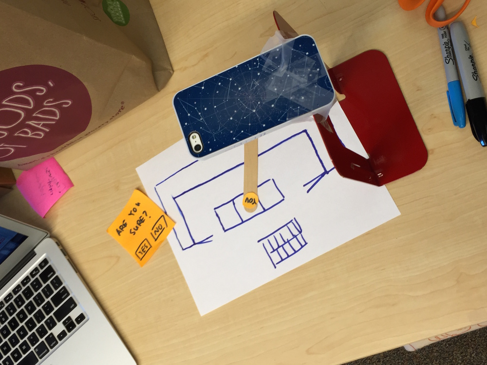
Remote Paper Prototype Testing
Approaching low-fidelity prototyping differently
Delta Lab, March 2014-April 2015
Details
Remote Paper Prototype Testing (RPPT) takes a new approach to lo-fidelity prototype evaluation, focusing on the shortcomings of mobile application prototyping. While current prototyping methods typically create more complex and better looking interfaces requiring many predefined interactions, RPPT allows remote testing of paper prototypes, empowering designers to wizard and respond to new user actions on the spot.
I built all the technology necessary for RPPT (a Google Glass video streaming application, an iOS video streaming gesture tracking application, and a web "command center" interface), conducted users studies to evaluate RPPT's effectiveness, and wrote a paper summarizing my findings. This work was accepted to CHI 2015 in Seoul, South Korea, where I travelled to present my findings.
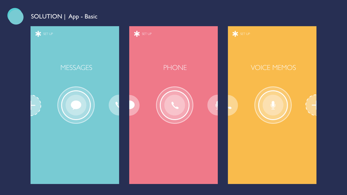
ReaXn
Feel safe anytime, anywhere
CHIMEHACK 2 (winner), July 2015
Details
We approached building ReaXn recognizing that, while many feature rich women's safety apps already exist, they all a quick and discrete one-step action to activate such features. That’s where ReaXn comes in.
ReaXn’s iOS prototype allows a user to knock on their phone, without taking it out of their pocket, and send a message alert to anyone. The receiver, content, and other information are pre-configured so reacting is truly a one-step action.
Much of ReaXn's knocking motion is extended from BiteNow/Tapshare, two projects originating from Delta Lab that leveraged the knocking gestures as low-effort actions that collected crowdsource data.
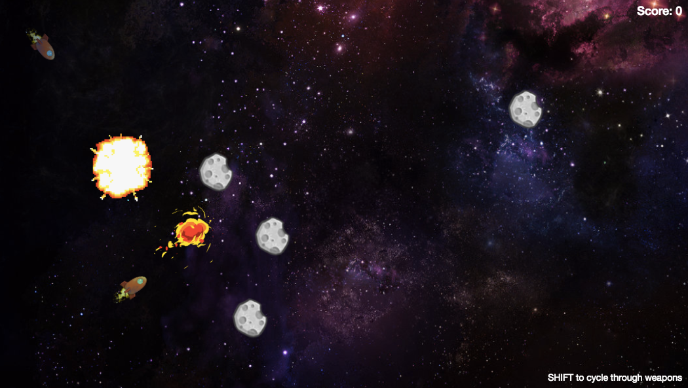
Meteoroids
"Most Interstellar" Space Shooter
MeteorHack, August 2015
Details
Meteoroids is an experimental quasi-multiplayer asteroids-esque space shooter game built at MeteorHack, where it won the "Most Interstellar" prize.
By quasi-multiplayer, I mean that we tried using Meteor's reactive data to store ingame state as a snapshot of the Mongo database at a given moment in the game. This, as most people can imagine, was pretty inefficienct. We attempted to minimize the necessary data sent from each client (e.g. send only movement changes instead of position), but quickly found that discrepancies in timing caused clients to quickly desync.
As a result, Meteoroids becomes extra chaotic — bullets fire from approximately other ships' locations and asteroids are always located in different positions, though destruction of asteroids at each "level" happens simultaneously.
Nevertheless, we had fun creating and playing this little game. Features a boss and 4 weapons!
Project Rift
Novel interactions in virtual reality
Delta Lab, March 2015-Present
Details
This is a experimental work-in-progress project exploring new interactions that virtual reality makes possible or breaks some threshold of realism.
In particular, we look to create an interaction between two people — one omniscient "brain" wearing the Oculus Rift and directing the other, who is in real life receiving directions on a smart phone. We try to see what sort of useful guidance is possible with this setup.
This project is still in its very early stages. Further updates to come soon!
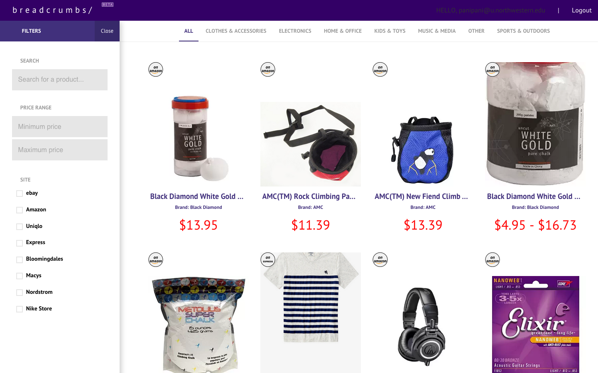
Breadcrumbs
Backtrack and simplify online shopping
NUvention, Jan 2015-Present
Details
Breadcrumbs is an online shopping companion logs every product you see online and organizes them into a sortable, filterable, and intuitive dashboard, seriously cutting down the number of tabs you ever need to keep open. To do this, Breadcrumbs contains two parts: a Chrome extension that works in the background collecting data, and the aforementioned web dashboard.
I created the majority of the infrastructure that connects all of Breadcrumbs components together, decided on how to organize user data, and collaborated with the other developer on my team to style the user-facing interface. This project/product was part of NUvention, a special class at Northwestern in which teams develop, launch, and pitch a product over the course of two quarters.
Speakamos
Online language learning for everyone
Speakamos, Jan 2015-May 2015
Details
Speakamos is a videochat platform designed for practicing online language learning.
I designed and implemented all of Speakamos's features: video chat, text chat, learner matching, friends lists, private messaging, private calling, and so on.
I have since transitioned away from the Speakamos team. They've brought in a new developer, and the site can be found at here.
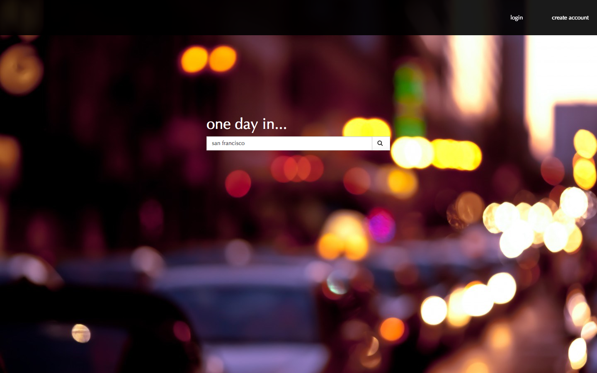
One Day In
Simplifying trip planning
HackIllinois, March 2014
Details
Given any city, One Day In will automatically create one day's itinerary for an adventurous traveler. One Day In intelligently puts together this schedule from a short optional user evaluation and information from Yelp.
This was a project at the 2014 HackIllinois Hackathon.
I haven't reaaally figured out how to make this section responsive yet, so just check out my resume in the meantime.
Or you know, visit the site not on your phone!
I CONSIDER MYSELF AN EXPERT IN THE FOLLOWING TECHNOLOGIES:
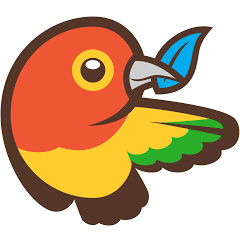
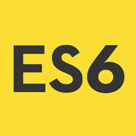
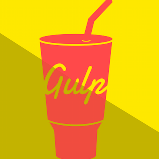
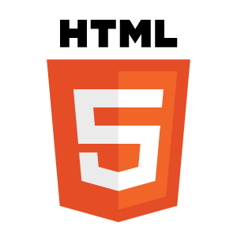
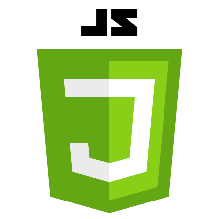
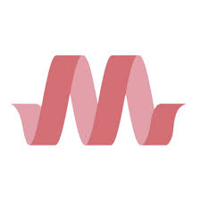
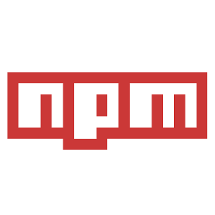
I AM ALSO FAMILIAR WITH THESE:
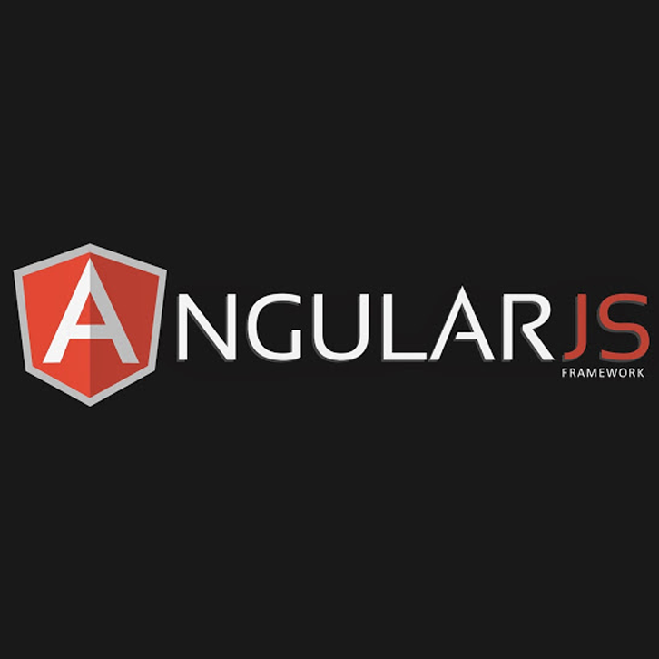
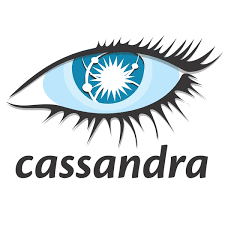
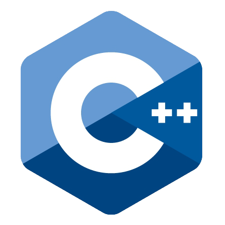
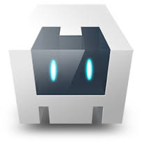
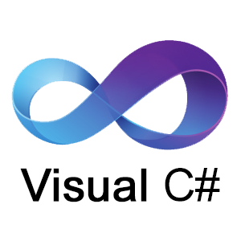
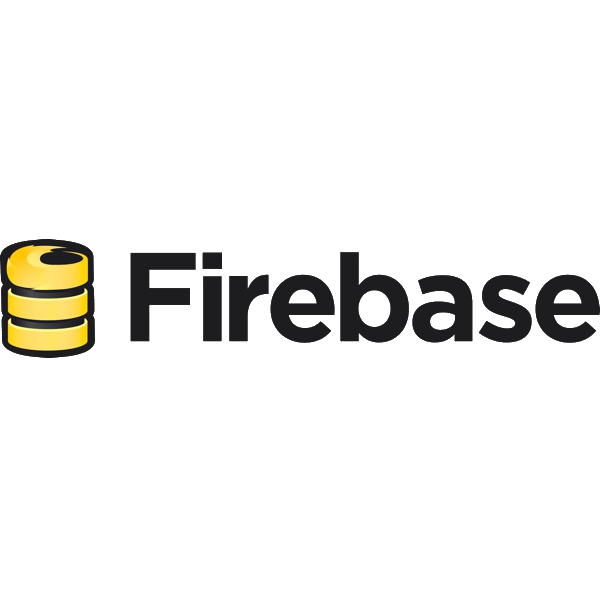
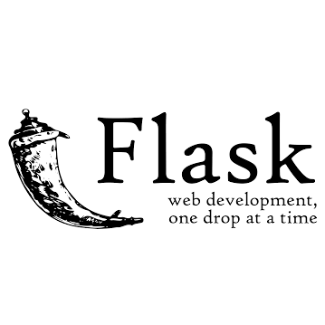
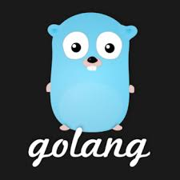
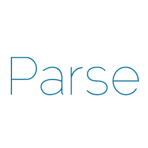
HERE'S A BIT ABOUT WHAT I'VE BEEN UP TO:
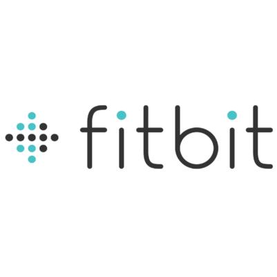
Software Engineer
Fitbit | August 2016 - Present | Boston, MA
I'm here now! This is my first full-time software engineer job. I'm mostly working on backend stuff
right now.
Freelance Developer
Toptal | January 2016 - Present | Boston, MA
I occasionally pick up freelance contracts up on Toptal, though I'm not too focused on that right now
with a full-time position at Fitbit.
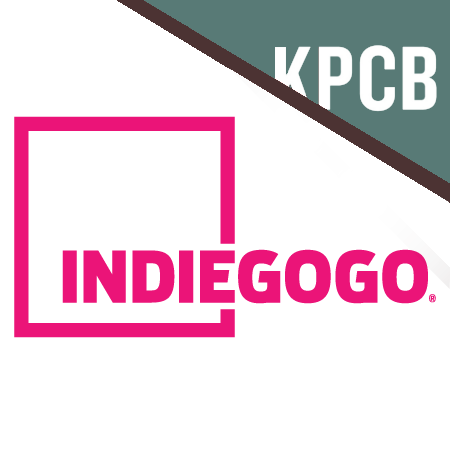
Software Engineer / KPCB Fellow
Indiegogo | Summer 2015 | San Francisco, CA
I'm currently working as a full-stack developer intern at Indiegogo, with an emphasis on iOS development.
Unlike typical internships, I'm not given a specific project, but instead work as a full member of a scrum team.
So far, I've done work in payments, written behavior driven tests, researched mobile frameworks, with more to come.
Researcher
Delta Lab | March 2014 - June 2016 | Evanston, IL
Delta Lab is my primary commitment during the school year. I'm constantly involved in either [designing, developing, doing, conducting, writing] research [projects, applications, studies, papers], and so on. I've hacked on Glass, ran user studies, transcribed hours worth of my own interviews (incredibly tiring), and flown to South Korea to talk about my projects. I anticipate staying with Delta Lab and working with my advisor, Haoqi Zhang, until graduation.
Freelance Developer
Speakamos | Jan 2015 - May 2015 | Evanston, IL
I worked as a freelance developer creating Speakamos (for project details, see above). My responsibilities here included designing and developing the website and regularly meeting with project stakeholders about any changes in direction or features requests.
Teaching Assistant
Northwestern University | Sept 2014 - Present | Evanston, IL
I've ran discussion sections, held office hours, and graded exams for EECS 348: Artifical Intelligence and EECS 336: Design & Analysis of Algorithms at Northwestern University. I have generally enjoyed being a TA.
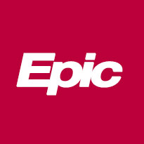
Software Developer
Epic | Summer 2014 | Madison, WI
I spent this summer working to creating and iterating on a pharmacy kiosk application. My work involved developing in C# and XAML, interfacing with multiple medical records service, and automating allergy and insurance checks.
Consultant
Northwestern University Information Technology | Oct 2012 - Dec 2|14 | Evanston, IL
I work as a tech consultant as part Northwestern University's IT team. I acted as directory assistance, triaged tickets, helped with network management and access, fixed laptops (e.g. virus extermination and OS reinstalls), and reset forgotten passwords.
REACH OUT. SAY HI.
I'm currently in Boston exploring what it's like to be a real person working full-time at Fitbit.
Feel free to chat me up if you see me around th city,
shoot me an email, or
add me on LinkedIn.